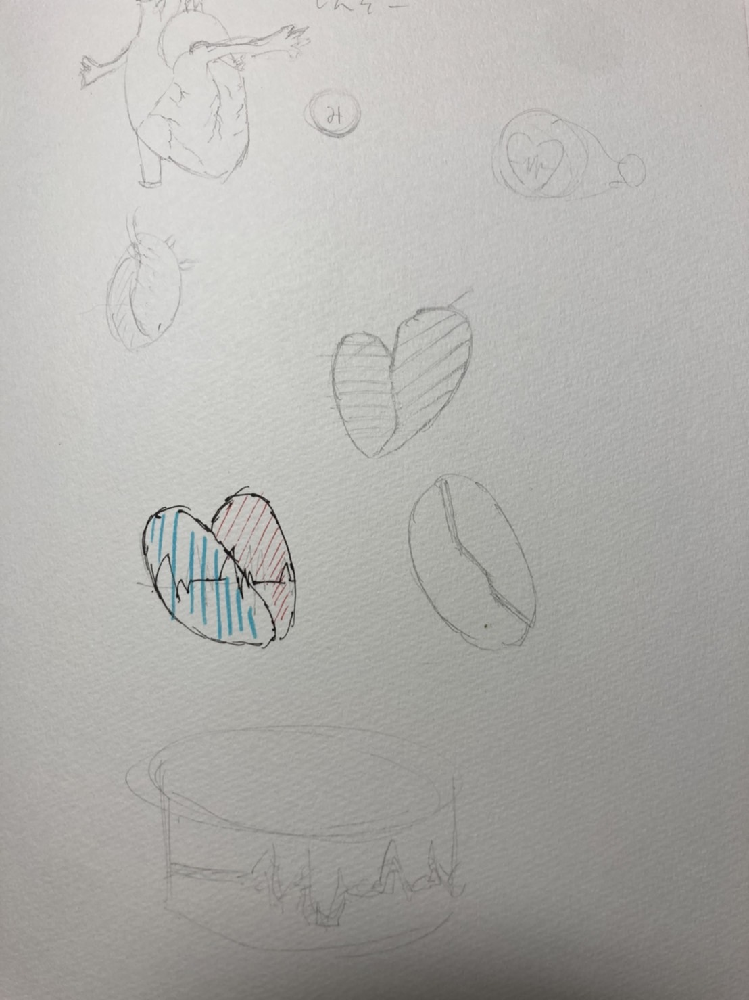
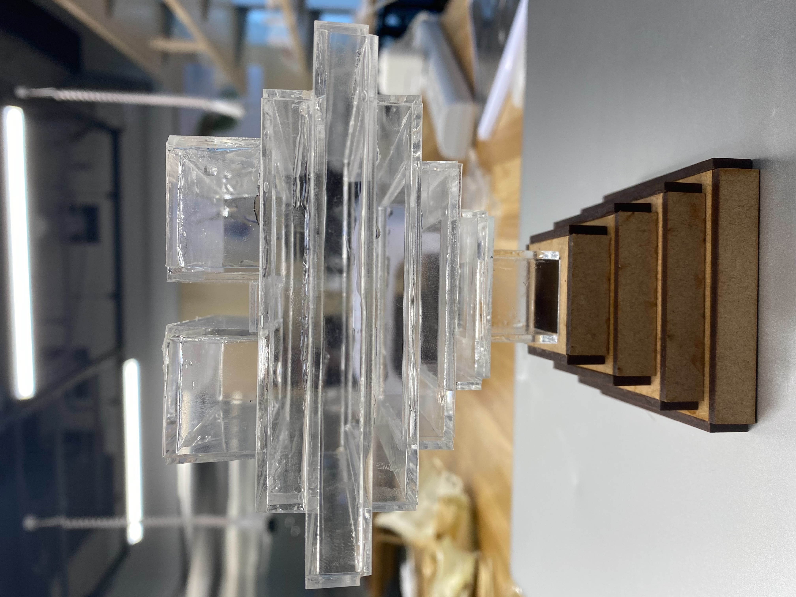

デザイン演習Ⅲ・Ⅳ assignment 最終回
発表動画
まとめ
今回IOTサービスプロトタイピングをやってみてうまく行ったこと、楽しかったこと僕がやってみて楽しかったことのひとつにチームになって何かを共有して外装を考えるというのがありました。

このように作ってみたい絵を描いて共有し、作ったり試行錯誤するのが楽しかったし、一番難しいことでもありました。なぜならみんな想い想いの作ってみたい形があったりしたのでみんなが納得のいくものを考えるのが難しかったです。
試作品

この中でも反省点がいくつかありました。まず最初の実行に移すまでが遅かったことです。
脈拍センサーを使うことが決まるまでがとても遅くその分時間が無駄になってしまったので、それが無ければ余裕を持った他の形であったり、
プログラミングが作れたと思うからです。もう一つが私たちの班はプログラミングと見た目の班に分かれてやっていたのですが、
その時にリーダーが誰かというのが明確に決まっておらずどういう作品を作りたいのかという舵を取る人がいなかったので最後まで戸惑うことがありました。
これから学べたこととして、何か作りながら考えることで時間短縮ができさらに他の想像ができたのではというのが学べました。
さらにちゃんとした役割を決めることで円滑に話しがまとめることができるというのもわかりました。